第1部 OpenFOAM＋FrontISTR
出発点：内部の温度と、実際の発熱量がわからない
円筒を片側からヒーターで温める状況を考える。
- 直接測れる量：表面近傍の温度と、上面の伸び。
- 知りたい量：内部を含む温度分布と、ヒーター発熱量Q。
- 不明な条件：初期温度とQが、正確にはわからない。
そのまま計算すると、予測する温度と変形が正解から外れる。
「測れる数か所」から「測れない全体と入力」を推定したい。
中空円筒を対象とした104の数値実験
初期温度とヒーター発熱量を外した予測を、観測で補正する
OpenFOAM × FrontISTR × EnKF
発表者・所属：［記入欄］
実ソルバで温度と変位を観測し、状態を補正（正確だが重い）
円筒を片側からヒーターで温める状況を考える。
そのまま計算すると、予測する温度と変形が正解から外れる。
| 項目 | 設定 |
|---|---|
| 外径／内径 | 75 mm／40 mm |
| 高さ | 100.5 mm |
| 真の初期温度 | 20 ℃（293.15 K） |
| 真の発熱量 | 15 W |
| 固体温度の自由度 | 20,696セル |
初期温度とQを間違えていても、温度・変位の観測を使えば、温度分布とQを正解に近づけられるか？
| 確かめること | 判定に使う量 |
|---|---|
| 温度分布を補正できるか | 全セルの温度場RMSE |
| 発熱量も推定できるか | Qの推定値と真値15 Wとの差 |
| 連成して繰り返せるか | 予報→同化→再開の動作 |
温度のみより良いか、という比較は今回まだ行っていない。
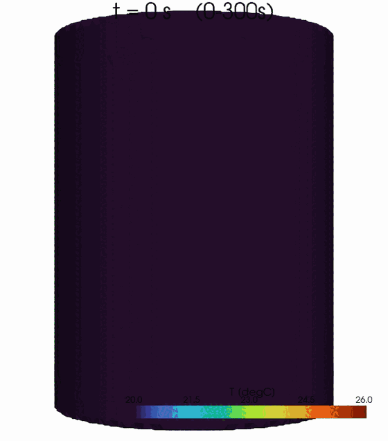
chtMultiRegionFoam ＝ 固体・流体・輻射を同時に解く連成ソルバ（熱伝導だけではない）:
\[\rho c_p\,\partial_t T=\nabla\cdot(k\nabla T)\]
（ヒータ面に発熱Q） - 流体：ナビエ・ストークス＋エネルギー＋浮力（自然対流、式は次ページ） - 輻射：fvDOM（RTE）
出力：固体全 20,696 セルの温度場 T(x,t)。 下は0→600sの断面アニメ（加熱→冷却）。
流体側は連続・運動量（ナビエ・ストークス＋浮力）・エネルギーを解く：
\[\nabla\cdot(\rho\mathbf{U})=0\]
\[\partial_t(\rho\mathbf{U})+\nabla\cdot(\rho\mathbf{U}\mathbf{U})=-\nabla p+\nabla\cdot\tau+\rho\mathbf{g}\]
\[\partial_t(\rho h)+\nabla\cdot(\rho\mathbf{U}h)=\nabla\cdot(\alpha_{eff}\nabla h)+S_{rad}\]
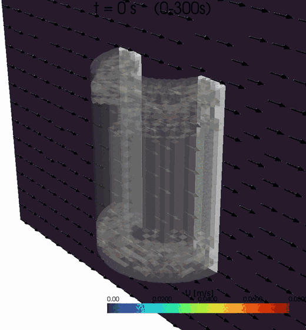
ヒータで温まった壁面付近に上昇流（自然対流プルーム）が生じ、固体を冷やす。
断面の流速 |U|（最大約 0.1 m/s、矢印=向き）を 0→600 s で表示（加熱0-300s→遮断300-600s）。
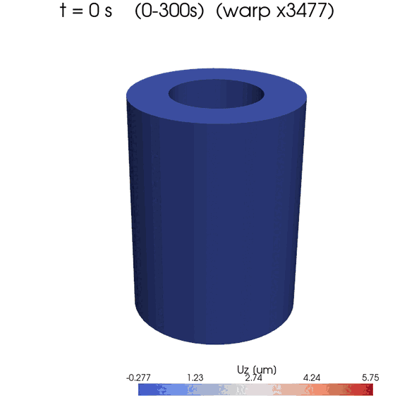
FrontISTR ＝ 変形（変位）の計算
OpenFOAMの温度を入力に線形熱弾性静解析。熱ひずみ
\[\varepsilon_{th}=\alpha(T-T_{ref})\]
、つり合い
\[\nabla\cdot\sigma=0,\ \sigma=C:(\varepsilon-\varepsilon_{th})\]
を底面固定で解く。
出力：各節点の変位 U（特に上面 Uz）。 温度→変位の一方向。
各スライドの支配方程式を一覧にすると：
| ソルバ | 領域 | 解く式 |
|---|---|---|
| OpenFOAM | 流体 | 連続・運動量(NS＋浮力)・エネルギー |
| OpenFOAM | 固体 | 熱伝導 ＋ ヒータ発熱 Q |
| OpenFOAM | 輻射 | fvDOM（放射伝達方程式 RTE） |
| FrontISTR | 構造 | 熱膨張・線形静解析 |
連成の向き： 熱流体で温度 T → その温度で FrontISTR が変位 U（一方向）。
| 項目 | 設定 |
|---|---|
| ヤング率／ポアソン比 | 205 GPa／0.3 |
| 線膨張係数 | 1.2 × 10⁻⁵ /K |
| 熱ひずみの基準温度 | 293.15 K |
| 変位拘束 | FIX_XYZ、FIX_YZ、FIX_Zの節点群 |
物性・支持条件は固定した既知条件として扱う。
\[y=[T_{hot},T_{cold},u_{z,heater},u_{z,opposite}]^{\mathsf{T}}\]
| 観測 | 定義 | ノイズ標準偏差 |
|---|---|---|
| hot / cold温度 | 指定座標の最近傍固体セル | 0.30 K |
| ヒータ側／反対側Uz | 各側の上面節点群の平均 | 10⁻⁴ mm＝0.1 µm |
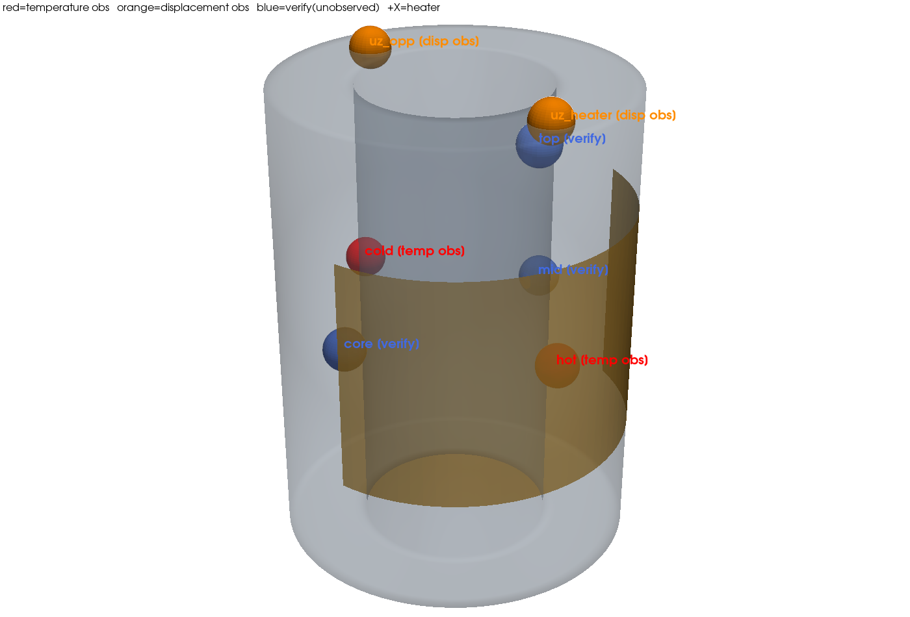
観測（EnKFに渡す4点） - 温度2点：hot（+X ヒータ側）・cold（−X 反対側）… 赤 - 変位2点：上面 Uz（heater側・opposite側）… 橙
確認（未観測、DAの当たりを検証） - mid（+Y 90°）・top（上面近傍）・core（肉厚中心）… 青
未観測点が真値に一致するかで、データ同化の効果を確かめる。
\[z=[T_0,T_1,\ldots,T_{20695},Q]^{\mathsf{T}}\]
各メンバーの固体温度場
├─ 最近傍セルの抜き出し ──────────→ 温度2成分
└─ IDW補間 → FrontISTR静解析 → 上面平均 → 変位2成分
↓
Yf の1行に格納EnKFには、各メンバーで評価した Yf を渡す。
\[z^{(i)}\leftarrow\bar{z}+1.05(z^{(i)}-\bar{z})\]
\[R=\mathrm{diag}(0.30^2,0.30^2,10^{-8},10^{-8})\]
| 成分 | 分散の単位 | 設定 |
|---|---|---|
| 温度 | K² | 0.09 |
| 変位 | mm² | 10⁻⁸ |
異なる観測の測定誤差は、ここでは無相関と仮定する。
\[K=C_{zy}(C_{yy}+R)^{-1}\]
\[z_a^{(i)}=z_f^{(i)}+K(y+\varepsilon^{(i)}-y_f^{(i)})\]
観測摂動：各メンバーで ε⁽ⁱ⁾ ∼ N(0, R) を生成。
実装は逆行列を作らず、np.linalg.solve()
で4×4の系を解く。
Qは直接測れない。Qを状態に入れ、温度との相関から逆算する（既出のH・R・Kをそのまま使う）。
・状態にQを含める：
\[z=[T_1,\dots,T_{N_c},\,Q]\]
。各メンバーは違うQ→「Q大→温度高」の相関。
・その相関は共分散
\[C_{zy}=\frac{1}{N-1}\sum_i(z_f^{(i)}-\bar z)(y_f^{(i)}-\bar y)^{T}\]
のQの行 cov(Q,T) に入る。
・前ページの
\[K=C_{zy}(C_{yy}+R)^{-1}\]
のQの行が K_Q（1×4）:
\[K_Q=[C_{zy}]_{Q,:}\,(C_{yy}+R)^{-1}\]
（[C_{zy}]_{Q,:}=Qと各観測の共分散の行）
\[Q_a^{(i)}=Q_f^{(i)}+K_Q\,(y+\varepsilon^{(i)}-H(z_f^{(i)}))\]
cov(Q,T)>0 なので、温度が観測より高すぎ→Q下げ、低すぎ→Q上げ。
実ソルバ版のデータ同化はこの構成（104フォルダ内）：
daof/ …
OpenFOAM連成（ケース生成・実行・場の読み書き・双子実験ドライバ）fem/ … FrontISTR 変位の観測演算子openfoam/run_fem_enkf/ …
真値＋5メンバーのOpenFOAMケース（計算現場）run/run_openfoam_fem_enkf.py … 実行の入口dacore/enkf.py …
EnKF解析（ROMと共通）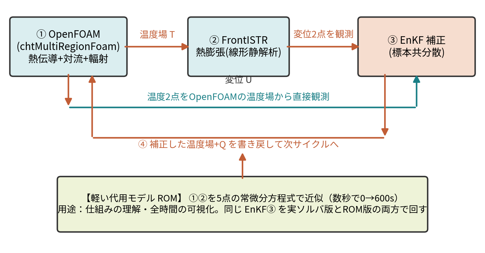
① OpenFOAMで温度場 → ② その温度からFrontISTRで変位。
観測は 温度2点（温度場から直接）＋ 変位2点（FrontISTR）。
③ EnKFがこの4観測で状態（温度場とQ）を補正 → ④ 書き戻して次サイクルへ。真値＋5メンバーで繰り返す。
0 → 10 s member_00: OpenFOAM → FrontISTR
member_01: OpenFOAM → FrontISTR
…
member_04: OpenFOAM → FrontISTR
↓ 5個の結果から EnKF 更新・各ケースへ書き戻し
10 → 20 s 同じ5ケースを継続し、再び EnKF 更新subprocess.run(..., cwd=member_dir)
で各計算の終了を待つ。
| 対象 | OpenFOAMの区間計算 | FrontISTR静解析 |
|---|---|---|
| 5メンバー × 2区間 | 10回 | 10回 |
| 真値 × 2区間 | 2回 | 2回 |
| 合計 | 12回 | 12回 |
同化処理の行列計算に加えて、各メンバーで物理ソルバを評価する。
| 配列 | 行 × 列 | 内容 |
|---|---|---|
| Zf | 5 × 20,697 | 全セル温度＋Q |
| Yf | 5 × 4 | 各ケースの予報観測 |
| y | 4成分 | 合成観測 |
| Za | 5 × 20,697 | 同化後の全メンバー |
行＝メンバー、列＝同じ物理量。
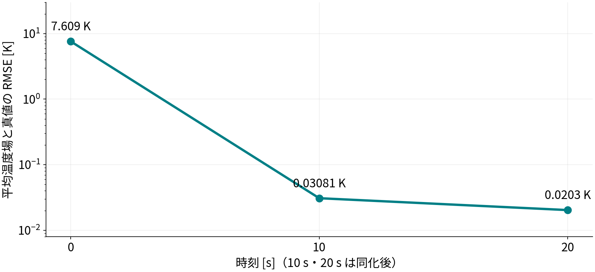
5メンバー・単一シードの結果。
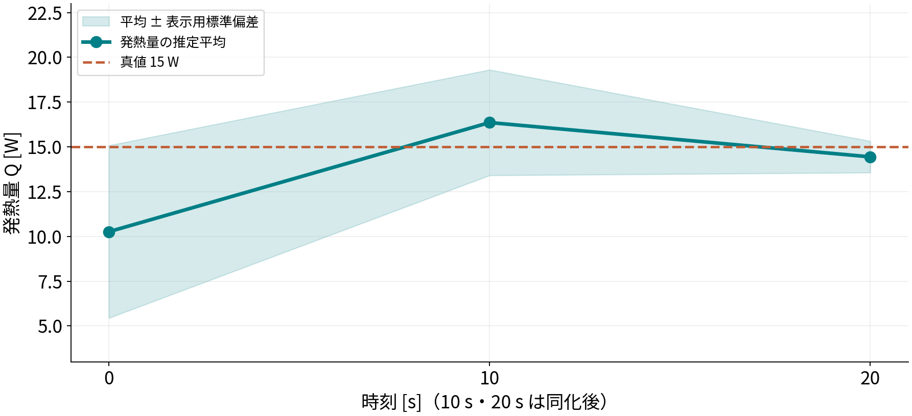
最終偏差：−0.556 W （真値に対し約−3.71%）
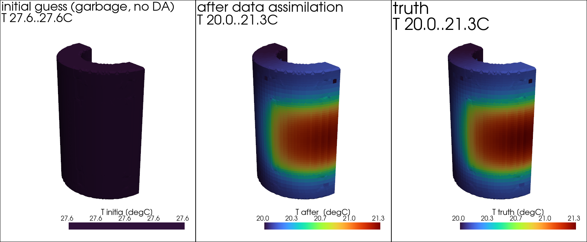
初期平均は t＝0秒、同化後と真値は t＝20秒。同化なし20秒の比較ではない。
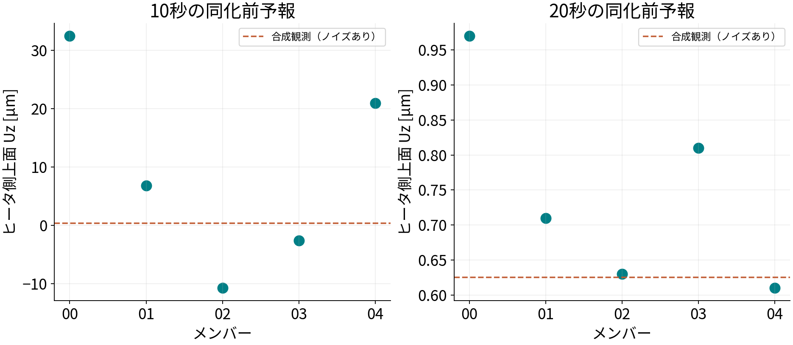
10秒予報：−10.70〜32.48 µm。20秒予報：0.61〜0.97 µm（ヒータ側上面）。
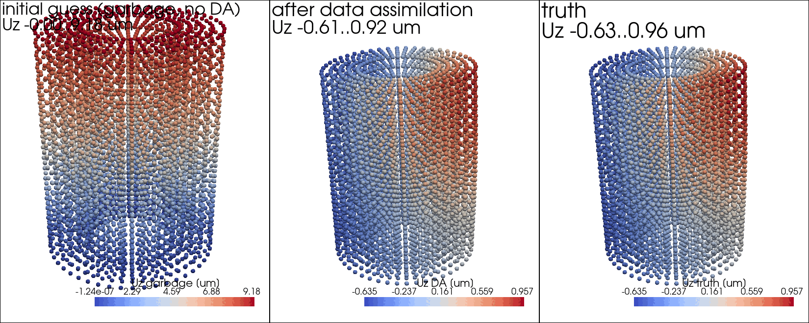
温度場の補正を構造応答へ反映。図は保存温度場を使った後処理のFrontISTR解析。
| 時刻 [s] | 温度場RMSE [K] | Q平均 [W] | Q標準偏差 [W] |
|---|---|---|---|
| 0 | 7.60909 | 10.2642 | 4.81694 |
| 10 | 0.0308066 | 16.3594 | 2.94875 |
| 20 | 0.0202975 | 14.4442 | 0.878855 |
真値Q＝15 W。10秒・20秒は同化後。
同じ方程式を5点に縮約した軽い前進モデル（数秒）
実ソルバは重いので、同じ物理を5点に縮約した軽い前進モデル(ROM)を作る。
固体の熱伝導PDEを有限体積で粗くし、5つの代表ノードの常微分方程式にする：
\[C_i\frac{dT_i}{dt}=\sum_j K_{ij}(T_j-T_i)-h(T_i-T_{air})+Q_i(t)\]
係数 C・K・h は102_0の温度履歴に最小二乗で校正（h≈0.0236 W/K、残差0.012 K）。0→600 s が数秒。
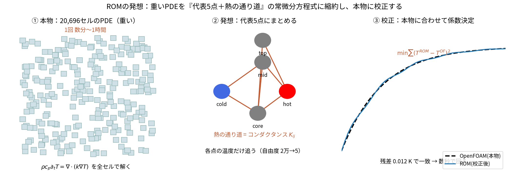
① 本物は20,696セルのPDE（重い）→ ② 代表5点を熱の通り道でつなぐ → ③ 本物に最小二乗校正。
「同じ熱収支を粗く離散化したもの」なので、校正すれば本物に一致（残差0.012 K）、0→600 sが数秒。
\[C_i\frac{dT_i}{dt}=\sum_j K_{ij}(T_j-T_i)-h(T_i-T_{air})+\dot{Q}_i\]
5点しか持たないが、逆距離加重補間(IDW)でメッシュ全体へ再構成できる。
重み行列 W（節点数×5、行和1）を1度作り、各時刻は行列積1発：
\[T_{mesh}=W\,T_{node},\quad W_{p,i}=\frac{1/|p-x_i|^2}{\sum_j 1/|p-x_j|^2}\]
変位は再構成温度をFrontISTRに通す（または線形写像
\[u_z=D(T-T_{ref})\]
）。分布・アニメを数秒で生成。
| 項目 | 内容 |
|---|---|
| 状態 | 5温度＋発熱倍率q＋放熱h |
| 同化用 | Zda：60×7 |
| 比較用 | Zfree：同じ初期値の60×7 |
| 更新観測 | hot・coldの温度のみ |
| 共分散の分母 | 60−1＝59 |
| 偏差拡大倍率 | 1.02 |
軽いROM版はこの構成（dacore/ だけで完結）：
dacore/cht_rom.py …
5点の前進モデル（常微分方程式）dacore/calibrate.py／displacement.py …
102_0・102_1へ校正dacore/twin_fem.py …
双子実験ドライバ、dacore/enkf.py …
EnKF解析（共通）run/run_rom_fem.py … 実行の入口（数秒）実ケースフォルダは作らず、メモリ上のNumPy配列（60×7）で計算する。
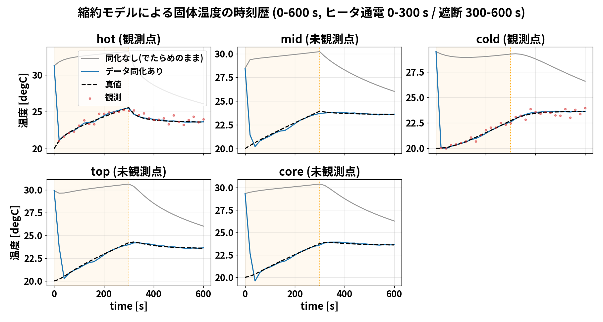
同化するのはhot・cold。mid・top・coreは観測に含めない。0〜300秒で加熱し、300〜600秒で遮断。
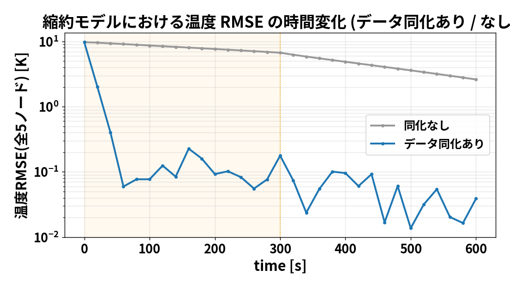
再計算による確認値
同じ初期アンサンブルから比較。
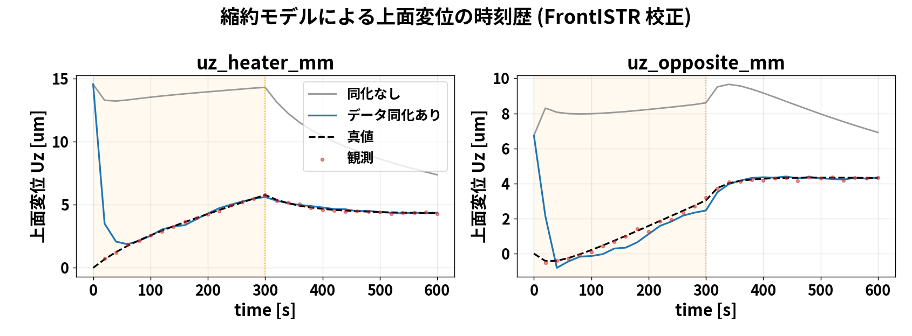
変位は校正済みの線形写像 u＝D(T−Tref) で算出。図中の変位観測は表示用で、更新には使わない。
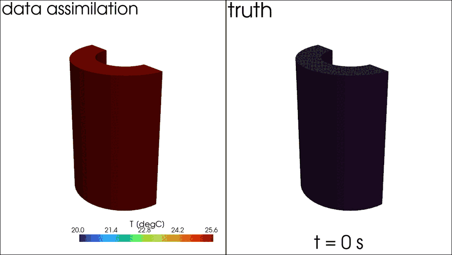
でたらめ初期からデータ同化した温度分布（左）と真値（右）を、加熱→冷却の全過程で比較。5点をIDWでメッシュに再構成して表示。同化後は分布まで真値に一致する。
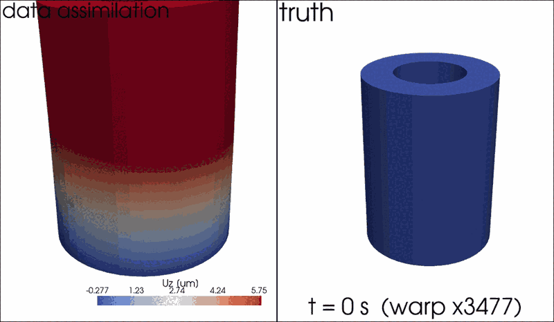
同化後の温度から計算した変形（左）と真値の変形（右）。温度が真値に一致するにつれ、そこから決まる変位分布も真値に一致していく。
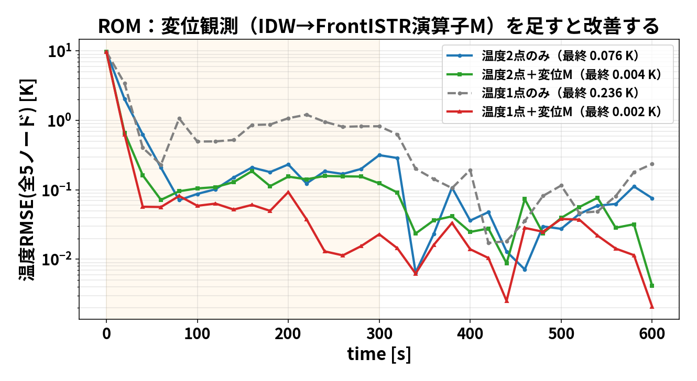
当初は発散したが、原因は実装バグ2つ：①校正Dが悪条件→IDW→FrontISTRの演算子Mに、②観測を M(T-T_ref) とアフィンで評価。修正後は変位が効く：
温度2点のみ 0.076 K → 温度2点＋変位 0.004 K（18倍）、温度1点のみ 0.236 K → 温度1点＋変位 0.002 K（100倍）。温度点が少ないほど効く。
少数観測で温度場とQを推定。実ソルバ=正確・重い/ROM=軽い・全時間
問い：初期温度とQを外しても、少数観測から補正できるか。
実施：温度2＋変位2を用い、5ケースをEnKFで2回更新した。
結果：温度場RMSEは7.609→0.0203 K、Qは14.444 W（真値15 W）。
次の問い：変位を使うと、温度のみよりどれだけ改善するか。
| 比較群 | そろえる条件 | 比較指標 |
|---|---|---|
| 同化なし | 初期値・真値・Q設定 | 温度RMSE・Q誤差 |
| 温度のみ同化 | 同じ温度観測・乱数条件 | 同上 |
| 温度＋変位同化 | 同じ初期アンサンブル | 同上＋変位予測誤差 |
複数シードとメンバー数で、平均的な効果とばらつきを評価する。
| 今回わかったこと | まだ検証していないこと |
|---|---|
| 温度＋変位を使う連成同化が動く | 温度のみより、どれだけ良いか |
| この双子実験で温度場とQが改善 | 実物の測定値でも同じ精度か |
| 同化後から次の予報へ継続できる | 初期分布・物性・条件が違っても有効か |
次は同じ条件で「温度のみ」と「温度＋変位」を比較する。
数式・実装・検証条件・文献
全温度場の正解は、推定精度を採点するために別に保持する。
| 知りたかった量 | 推定開始時 | 20秒後 |
|---|---|---|
| 温度場の誤差（RMSE） | 7.609 K | 0.0203 K |
| 発熱量Qの推定平均 | 10.264 W | 14.444 W |
Qの正解は 15 W。最終的な差は約 −0.556 W。
温度場の誤差は、観測していないセルも含めて計算した。
openfoam/run_fem_enkf/
truth/ 真値専用（統計には含めない）
member_00/ 推定用ケース0
member_01/ 推定用ケース1
member_02/ 推定用ケース2
member_03/ 推定用ケース3
member_04/ 推定用ケース4
fields/ 平均温度場などの保存先| ケース | 一様な初期温度 [℃] | 初期Q [W] |
|---|---|---|
| member_00 | 46.8108 | 8.4225 |
| member_01 | 25.4481 | 11.1967 |
| member_02 | 10.9867 | 6.2731 |
| member_03 | 17.5002 | 19.1881 |
| member_04 | 37.2997 | 6.2407 |
| 真値 | 20.0000 | 15.0000 |
| 構成要素 | この実装で行うこと |
|---|---|
| OpenFOAM | chtMultiRegionFoamで各ケースを前進 |
| 温度の転送 | セル中心温度→構造節点温度（IDW、近傍8点） |
| FrontISTR | 温度荷重による線形静的な熱膨張解析 |
| 観測抽出 | 温度2セルと上面2領域の平均Uz |
構造変形をOpenFOAMメッシュへ戻す処理は、この連成には含まれない。
| 統計量 | 分母 | 使用箇所 |
|---|---|---|
| EnKFの標本共分散 | N−1＝4 | 更新量を計算 |
| 表示用の分散 | N＝5 | Q.std()など |
初期Qの例：平均 10.2642 W、表示用標準偏差 4.81694 W。
表示用分散：23.20295 W²／標本分散：29.00369 W²。
\[\mathrm{RMSE}_T=\sqrt{\frac{1}{N_c}\sum_{j=1}^{N_c}(\bar{T}_{a,j}-T_{true,j})^2}\]
| 誤差要因 | 推定への影響を調べる方法 |
|---|---|
| 支持条件・線膨張係数 | 真値側と推定側を変えた双子実験 |
| 変位計のゼロ点・温度ドリフト | バイアス項の追加・感度評価 |
| 補間・メッシュ | IDW設定・解像度の変更比較 |
| ノイズ水準・観測配置 | Rと観測位置の感度評価 |
| 保存されるもの | 現在は保存しないもの |
|---|---|
| ケース・ソルバログ | 同化時のCzy、Cyy、ゲイン |
| 同化後の平均温度場 | 観測摂動εの全配列 |
| Q平均・標準偏差・RMSE | 同化前の全Zfの専用コピー |
各時刻のsolid/Tは同化後に上書きされる。
| ファイル | 主な関数・役割 |
|---|---|
| run/run_openfoam_fem_enkf.py | main：設定・実行・結果保存 |
| daof/of_fem_twin.py | run_fem_twin：全体の同化ループ |
| daof/of_case.py | run_window / set_solid_state |
| fem/fem_obs.py | displacement_obs：変位評価 |
| dacore/enkf.py | enkf_update：平均・共分散・更新 |
真の観測値 h(z_true)
+ 模擬測定ノイズ（rng_obs）
= 合成観測 y（全メンバーで共通）
各メンバーの更新
y + ε_i（rng） − y_f_irng_obs：seed、初期値・更新用rng：seed＋1。
| 平均 | 集計方向 | 目的 |
|---|---|---|
| 上面節点群のUz平均 | 1ケース内の節点群 | 変位観測1成分を定義 |
| アンサンブル平均 | 同じ量を5ケース間 | 状態推定の代表値 |
| 温度RMSEの二乗平均 | 平均場と真値の差を全セル | 場全体の誤差を評価 |
| 図・データ | 由来 |
|---|---|
| 20秒の3D温度分布 | OpenFOAM全セル場 |
| 同化後の3D変位分布 | 保存平均温度場をFrontISTRで再解析 |
| 600秒の温度・変位履歴 | ROMによる計算 |
| ParaViewの600秒温度アニメ | ROMの5温度を空間へ補間 |
results/openfoam_fem_enkf_history.csv、summary.yaml、openfoam/run_fem_enkf.log。